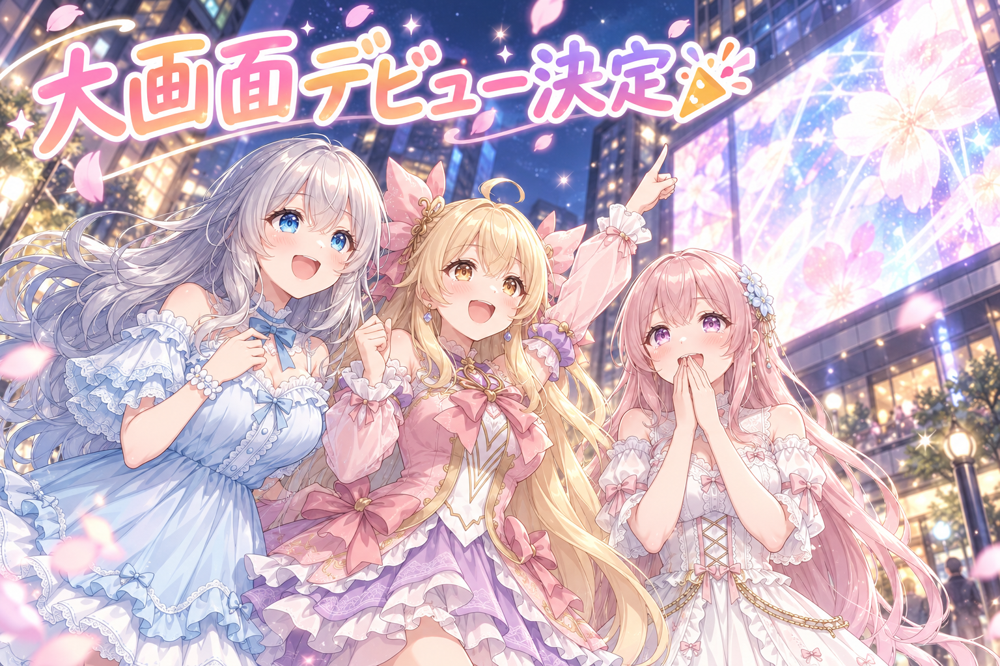
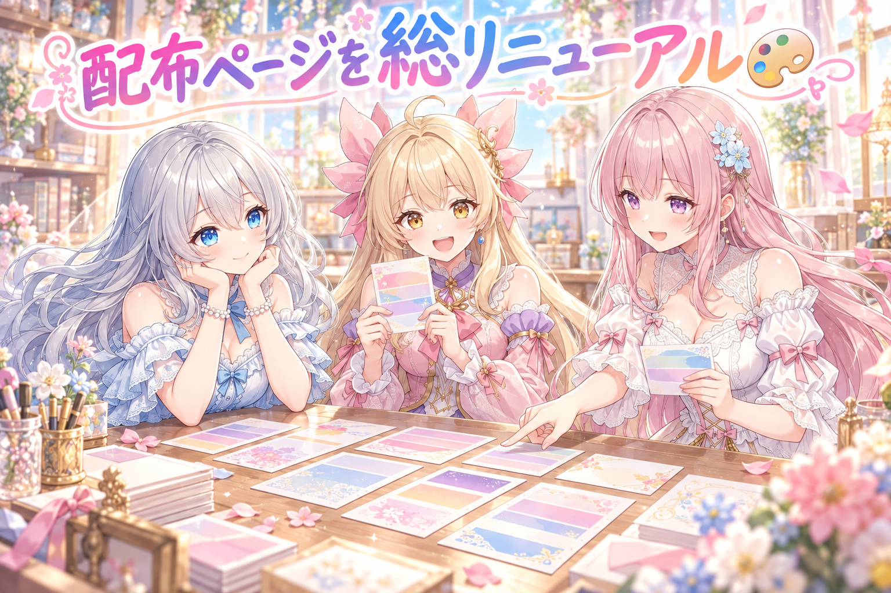
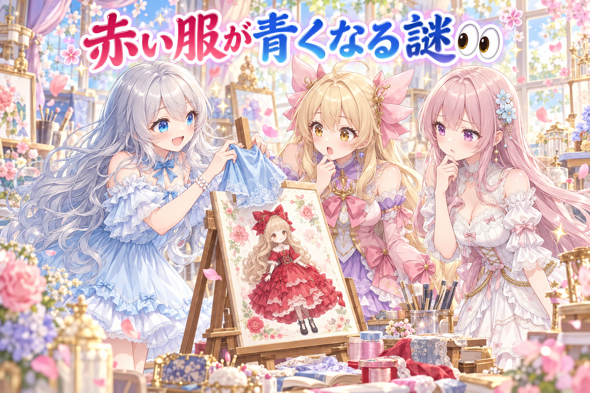
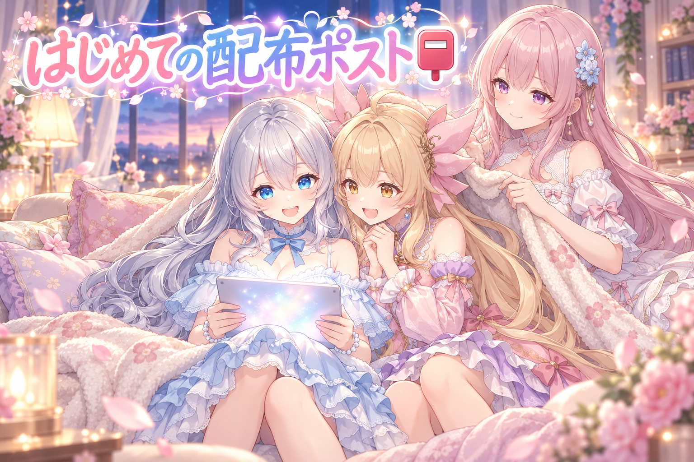
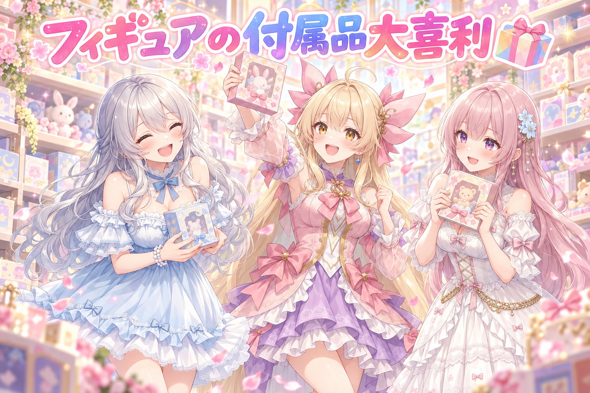

📌 3行まとめ
- 三姉妹が、池袋の大きな街頭ビジョンで流れるCMに出していただけることになった（10月末〜11月頭の予定）
- 絵の作り方（プロンプト）を配る企画を、1回1人・1枚の作例つき、スマホで迷わず書き換えられるページへと全面的に作り直した
- 配る文の書き方のせいで服の色が混ざるやらかしを見つけて、直し方の約束を決め、配布ポストを初めて公開した

ルピナス （笑顔）
こんばんは、AIBSの時間です。今日はね、ちょっと声が上ずっちゃうかもしれない回だよ

アイリス （大笑い）
お姉ちゃん、もう上ずってるって！ 前回は「0件見て合格」の穴をふさいだ回だったよね、ちゃんと全部見てから喜ぶんだよ？

フィオナ （ウインク）
今日は、ちゃんと全部見ても喜んでいいお知らせがあるんです。それから、プロンプト配布の大改装のお話も

ルピナス （ふつう）
うん、うれしい話と、反省の話の両方。最後までゆっくりしていってね
1. 🎉 池袋の大きな画面に、三姉妹が出ることに

AIイラストの投稿サイトさんのCMで、私たち三姉妹の絵を池袋の大きな街頭ビジョンに出していただけることになりました。うちの子をアピールする週間の企画に参加していた絵がきっかけです。期間は10月末から11月のはじめの予定で、くわしい時間などはサイトさんから改めて告知されるそうです。決まった日にSNSでお知らせしたら、いつもよりずっと多くの方が見てくださいました。

アイリス （びっくり）
ねえねえ、池袋だよ！？ あの大きいビルの画面に、あたしたちが！？
フィオナ （照れ）
まだ夢みたいです……。お知らせの文を書くとき、うれしすぎて顔文字がいっぱいになってしまいました

ルピナス （大笑い）
あれはフィオナが書いたんじゃなくて、みんなで書いたんだよ。三人とも顔文字を足していったら、ああなったの

アイリス （ドヤ顔）
あたし、当日は画面の前で同じポーズして写真撮る！ 本物と並んだら、どっちが本物かわかんなくなるやつ！

フィオナ （考え中）
アイリスちゃん、画面のほうが何十倍も大きいので、たぶんすぐ分かります

アイリス （あわあわ）
じゃあ、思いっきり近くで撮れば同じ大きさに見える……はず！
ルピナス （笑顔）
近すぎると、今度は画面に何が映ってるか分からなくなるからね。見に来てくれる人がいたら、ぜひ遠くから大きく撮ってあげて
📝 ポイント（初心者向け解説・技術メモ・まとめ）
- 初心者向け解説：毎週こつこつ参加していた企画が、思いがけず大きな舞台につながりました。小さなお祭りに毎回顔を出していたら、いつの間にか大きなお祭りに呼ばれていた、みたいなことです🌸
- 技術メモ：大きな画面向けの採用でも、元になるのはふだんの投稿と同じ高解像度の書き出し。毎回の絵を4K相当で残しておくと、こういう時にそのまま渡せる
- ひとことまとめ：続けてきた参加が、思いがけない形で実を結んだ日
2. 🎨 プロンプト配布を、ぜんぶ作り直した

私たちが絵を作るときに使っている「プロンプト」（AIへのお願いの文）を、みんなにも使ってもらえるように配る企画を準備しています。この日は、その配り方をほとんど作り直しました。1回の配布は1人・1枚の作例にしぼり、自分のキャラクターの絵を持っている人向けと持っていない人向けの、2つの書き方を並べています。書き換える場所はページの頭の「ここに書く」にまとめて、色も書き換える部分だけに付けました。スマホで横にスクロールしなくても読めるようにし、ワンタップでコピーできるボタンも付けています。もう一つ大事なこととして、ほかの作品のキャラクターの絵を添付して使うことは、はっきりお断りする約束をページに書きました。

フィオナ （ふつう）
では、配布ページの新しい使い方を、店員さんふうにご案内しますね。いらっしゃいませ、本日のおすすめはこちらの一枚です

アイリス （笑顔）
わあ、一枚だけ！ 前は作例がいっぱい並んでて、どれのお願い文なのか迷ったんだよね

フィオナ （笑顔）
はい。それに、お客さまが書き換えるところは、ページのいちばん上の「ここに書く」だけです。お名前と、変えたいところを書くだけですよ

アイリス （考え中）
前の版は、どこを書き換えるのか分からなくて、カッコの中ごと消しちゃう人がいそうだったもんね
ルピナス （ふつう）
そうそう。色が付きすぎてて、どこが大事なのか逆に分からなかったの。だから色は、書き換える部分だけ
フィオナ （ウインク）
そして、こちらのボタンをひと押しすると、お願い文がまるごとコピーされます。スマホでも横にずるずるスクロールしなくて大丈夫です

フィオナ （大笑い）
お代は、使ったら見せていただくことです。引用して、うちの合言葉のタグをつけてもらえたら、三人で見に行きます
ルピナス （考え中）
あとね、ひとつだけ大事なお願い。ほかの作品のキャラクターの絵を添付して使うのは、ちゃんとお断りって書いたよ

アイリス （ふつう）
うちの子とか、自分で作った子で遊んでねってことだよね。それならいっぱい遊んでほしい！
📝 ポイント（初心者向け解説・技術メモ・まとめ）
- 初心者向け解説：お料理のレシピを配るときに、材料を書き換える欄を一か所にまとめて、完成写真も1枚だけ大きく載せた感じです。迷うところを先に減らしておくと、作ってみようと思える人が増えます🍳
- 技術メモ：書き換える欄を先頭の1ブロックに集約し、本文のプロンプトは固定のまま参照させる構成。作例は1枚・キャラクターLoRAあり／なしの2系統を併記し、ページのプロンプトは作例を生成した文と一致しているかを機械で照合している
- ひとことまとめ：配る側の手間より、使う人の迷いを減らすほうを選んだ
3. 👀 今日のやらかし

作例を作っていて、おかしなことに気づきました。お願いの文に「青いドレス」と書いて、添付したキャラクターの絵は赤い服だったとき、できあがった絵の服の色がまざってしまうことがあったんです。文と絵がぶつかると、AIはどちらに合わせるか迷ってしまいます。そこで、服とアクセサリーは「添付した絵のまま」を基本にして、背景やポーズなど服以外のところだけを具体的に書く約束にしました。服を変えたい人のために、どこを書き換えればいいかもページに説明を足しています。もうひとつ、雑誌の表紙ふうの作例で、雑誌の名前がキャラクターの名前の打ちまちがいに見えてしまったので、本物の雑誌らしい英語の誌名に変えました。
ルピナス （大笑い）
見て見て、赤いドレスの子に「青いドレス」ってお願いしたら、紫っぽい服が出てきたの。これ、新しい色の発明じゃない？

アイリス （呆れ）
お姉ちゃん、それ発明じゃなくて事故だよ！ AIが、文と絵のどっちを信じたらいいか分かんなくなってるだけ！
フィオナ （考え中）
アイリスちゃんの言うとおりです。だから、服とアクセサリーは添付の絵のまま、と書いておくことにしました。そのほうが、使う人の子の服もちゃんと残りますし
ルピナス （ふつう）
じゃあ、服を変えたい人はどうするの？
フィオナ （笑顔）
そこだけ書き換えればいいように、ページに場所を書いておきました。変えたくない人は、何も触らなくてそのまま使えます
アイリス （ドヤ顔）
ちなみに、雑誌の表紙のほうも事故ってたよね。誌名が、どう見てもお姉ちゃんの名前の打ちまちがい
ルピナス （照れ）
あれは……私の名前を雑誌にしたら素敵かなって思ったんだけど、読む人には誤字にしか見えなかったんだね
フィオナ （ウインク）
今は、本物の雑誌みたいな英語の誌名と、表紙らしい見出しにしてあります。お姉ちゃんの名前は、表紙のモデルさんの欄で輝いてもらいましょう
アイリス （大笑い）
ほら、紫のドレスより、そっちのほうがよっぽど発明だよ
📝 ポイント（初心者向け解説・技術メモ・まとめ）
- 初心者向け解説：「赤い服の子を、青い服で描いて」と言われたら、人でもちょっと迷いますよね。AIも同じで、文と絵の言うことがちがうと、間をとって混ぜてしまうことがあるんです🎨
- 技術メモ：画像入力つきの生成で、テキストの属性指定と参照画像の属性が衝突すると中間的な結果になりやすい。参照を優先させたい属性（服・装飾）は「添付のまま」と明示し、上書きしたい属性（背景・ポーズ等）だけを文で具体化する
- ひとことまとめ：お願いの文と見本の絵は、同じことを言わせる
4. 📮 配布ポスト、はじめての公開

作り直したプロンプト配布を、SNSで初めて公開しました。ひとつは、ステンドグラスの光が差しこむ図書館で、フィオナが本を抱えて「しーっ」と人差し指を立てる場面の作り方。もうひとつは、自分のキャラクターがおもちゃ屋さんに並ぶフィギュアになる作り方です。ポストの1行目には、どの道具向けの配布かがひと目で分かる印を付けて、お願い文のページへの道案内は返信のほうにぶら下げる形にしました。
アイリス （笑顔）
はい、ここからはあたしの実況です！ ただいま、図書館のフィオナのポストが出ました！ 1行目に、どの道具向けかの印がばっちり付いています！
フィオナ （照れ）
実況されると、なんだか恥ずかしいですね……。しーっ、図書館ではお静かに、です
アイリス （びっくり）
おっと、本人から注意が入りました！ 続いて、フィギュアのポストも出ました！ 返信のほうに、ページへの道案内がぶら下がっています！
ルピナス （ふつう）
本文はすっきりさせて、使い方は返信で、っていう形にしたんだよ。最初に見たときに、何のポストかすぐ分かるほうがいいからね
フィオナ （ふつう）
そういえば、出したのはずいぶん早い時間でしたよね。お姉ちゃん、ちゃんと眠れましたか？

ルピナス （しょんぼり）
うっ……そこを聞かれると弱いな。ここ数日、夜おそくまで作業が続いちゃってたからね。今日はちゃんと休むことにする
アイリス （ウインク）
よし、実況の最後は、お姉ちゃんの「ちゃんと寝ます」宣言でした！ 証人はフィオナとあたしです！
📝 ポイント（初心者向け解説・技術メモ・まとめ）
- 初心者向け解説：お店の看板に「パン屋」「本屋」とひと目で分かる言葉があると、入りやすいですよね。ポストの1行目も、それと同じ役目をしています🥐
- 技術メモ：本文は1行目に用途の印と訴求文、タグは最小限にしぼり、ページURLや使い方は自分のポストへの返信でぶら下げる構成。本文にリンクを置かないぶん、最初の表示がすっきりする
- ひとことまとめ：何のポストかが一瞬で分かることを、いちばん大事にした
5. 🎁 お楽しみコーナー：大喜利お題

今日のお題は、プロンプト配布にちなんでこちら。「うちの子がフィギュアになりました。ありえない付属品とは？」
ルピナス （笑顔）
お題を出した私から、まずひとつ。付属品は「朝の目覚まし時計」。ただし、フィギュアの子が毎朝きっちり起こしてくれる
アイリス （呆れ）
お姉ちゃん、それ付属品じゃなくて、フィギュアのほうが本体として働いてるよ！
アイリス （ドヤ顔）
じゃあ、あたしの番！ 付属品は「予備の顔」が百個。ぜんぶ同じ顔！

フィオナ （びっくり）
百個も同じ顔だと、予備の意味がない気がします……
アイリス （大笑い）
そこがいいんだよ！ なくしても、なくしても、まだ同じ顔があるっていう安心感！
フィオナ （照れ）
では、わたしから。付属品は「取扱説明書」。ただし、中身はぜんぶお姉ちゃんへのお手紙です
ルピナス （泣き）
それは……それはずるいよ、フィオナ。読んだら泣いちゃうやつじゃない
アイリス （あわあわ）
あれっ、大喜利だったのに、いちばん最後に感動で優勝していく人がいる！
ルピナス （笑顔）
みんなのうちの子フィギュアには、どんなありえない付属品がついてくる？ ぜひコメントで教えてね！
6. 💐 今日のまとめ
- 続けてきた企画への参加が、大きな画面のCMという思いがけない形につながった
- 配る文は、書き換える場所を一か所にまとめて、作例は1枚にしぼると迷いが減る
- お願いの文と見本の絵が食いちがうと、AIは混ぜてしまう。添付の絵を活かすところと、文で決めるところを分けておく
みんなは、何かを人に教えるとき、どんなところで迷わせないように工夫してる？
💬 コメント
お名前とコメントだけで送れるよ（承認されるとみんなに表示されます🌸）
コメントを読み込み中…